Mechanical and Strain Sensors in Instrumentation
Instruments 5.1
Imron Rosyadi
Learning Objectives
By the end of this session, you should be able to:
- Distinguish between displacement/position sensors (potentiometric, capacitive, inductive, LVDT) and describe how they convert motion to an electrical signal.
- Explain how capacitive and inductive effects are used to sense mechanical displacement and level.
- Define stress, strain, and modulus of elasticity, and interpret a basic stress–strain curve.
- Describe metal and semiconductor strain gauges, their gauge factor, and how they are integrated in Wheatstone bridges (1-arm, 2-arm, 4-arm).
- Analyze and design simple signal conditioning circuits for potentiometers, capacitive sensors, LVDTs, and strain-gauge-based load cells.
- Solve numerical problems involving sensor sensitivity, linearity, and uncertainty.
Motivation: Why Mechanical Sensors Matter in ECE
Mechanical variables are everywhere in process control and embedded systems:
- Position of robot arms, valves, sliders, and actuators
- Level of liquids and solids in tanks or silos
- Pressure, force, weight, acceleration and vibration
- Displacement used as an internal variable inside many transducers
Often: - Mechanical variable → intermediate displacement/strain → electrical signal
Real-world examples:
- Position feedback in CNC machines (LVDTs, optical encoders)
- Car suspension monitoring (strain gauges, accelerometers)
- Weighing systems in industrial hoppers (load cells)
Tip
Key idea: If you can convert a mechanical effect into a small displacement or strain, you can usually measure it using an electrical sensor.
1. Overview of Mechanical Sensing
Mechanical variables we’ll focus on:
- Displacement / position (linear and angular)
- Level (as a special case of displacement)
- Strain and stress (internal deformation)
- Force / weight (via load cells using strain gauges)
Common transduction mechanisms:
- Resistive: potentiometers, metal/semiconductor strain gauges
- Capacitive: parallel plates, concentric cylinders
- Inductive / magnetic: LVDT, variable-reluctance devices
Mechanical input:
- Translation: \(x\) (m)
- Rotation: \(\theta\) (rad)
- Strain: \(\epsilon = \Delta l / l\)
Electrical output:
- \(R(x)\), \(C(x)\), \(L(x)\)
- Bridge voltage, op-amp output, ADC counts
2. Displacement, Position, Location Sensors
Common industrial needs:
- Location and position of objects on a conveyor system
- Orientation of steel plates in a rolling mill
- Liquid or solid level in a tank
- Work-piece position in automatic milling/CNC
- Convert pressure to a diaphragm displacement, then measure that displacement
We’ll study:
- Potentiometric displacement sensors
- Capacitive displacement sensors
- Inductive and variable-reluctance sensors (LVDTs)
- Level sensors (mechanical, electrical, ultrasonic, pressure-based)
2.1 Potentiometric Displacement Sensors – Concept
A potentiometric sensor is simply a variable resistor where motion moves a wiper.
- Translate linear or angular mechanical motion into resistance change.
- Standard 3-terminal configuration: two ends of resistive element (1–2), and a wiper (3).
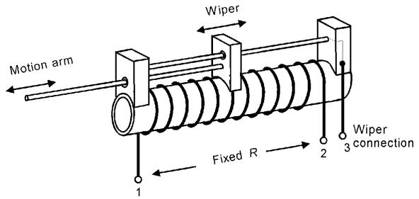
Operation:
- Resistive element has fixed total resistance \(R\) between 1 and 2.
- Wiper at position \(x\) taps a fraction of \(R\): typically \(R_{13} \propto x\).
- As \(x\) changes, \(R_{13}\) and \(R_{23}\) change approximately linearly with displacement.
Limitations:
- Mechanical wear and friction on the wiper
- Limited resolution in wire-wound types (step size \(\Delta x\) between turns)
- Electrical noise (contact noise, vibration)
Potentiometric Displacement Sensor – Resolution
In a wire-wound potentiometer:
- Each turn of wire corresponds to a discrete small displacement \(\Delta x\).
- Resistance per turn: \(\Delta R\).
Resolution limits:
- Minimum detectable displacement \(\approx \Delta x\).
- Minimum detectable resistance change \(\approx \Delta R\).
Trade-offs:
- More turns → better resolution → higher resistance and more fragile wire.
- Too few turns → coarse measurement, noisy due to “jumping” between turns.
Important
System linearity is not only about the sensor; it’s also about the signal conditioning circuit that converts \(R(x)\) into \(V(x)\) or \(I(x)\).
Example 1 – Potentiometer Signal Conditioning
Problem:
A potentiometric displacement sensor measures work-piece motion from 0 to \(10\ \mathrm{cm}\).
- Resistance varies linearly: \(0 \to 1\ \mathrm{k}\Omega\). Design signal conditioning to produce a linear 0–10 V output vs displacement.
Given:
- \(R_{\text{sensor}}(x)\) changes linearly 0–\(1\ \text{k}\Omega\) for \(x = 0\text{–}10\ \text{cm}\).
Example 1 – Why Not Just a Divider?
Naïve idea: use the sensor in a simple voltage divider.
- Supply \(V_s\), take output across the sensor.
- But \(V_{\text{out}} = V_s \dfrac{R_{\text{sensor}}}{R_{\text{sensor}} + R_{\text{fixed}}}\)
- This is nonlinear in \(R_{\text{sensor}}\) → nonlinear in displacement.
Better idea: use the sensor as the feedback resistor in an inverting amplifier:
\[ V_{\text{out}} = -\frac{R_2}{R_1} V_{\text{in}} \]
Let \(R_2 = R_{\text{sensor}}(x)\), choose \(V_{\text{in}}\) and \(R_1\) so that \(V_{\text{out}}\) is 0–10 V as \(R_2\) varies 0–\(1\ \text{k}\Omega\).
Example 1 – Circuit and Solution
Use a constant negative input voltage source, e.g., Zener diode at \(-5.1\ \mathrm{V}\).
We want:
- At \(x = 10\ \mathrm{cm}\) → \(R_2 = 1\ \mathrm{k}\Omega\) → \(V_{\text{out}} = 10\ \mathrm{V}\).
So:
\[ V_{\text{out}} = -\frac{R_2}{R_1} V_{\text{in}} \]
At full-scale:
\[ 10 = -\frac{1000}{R_1}(-5.1) \quad \Rightarrow \quad R_1 = 510\ \Omega \]
So choose \(R_1 \approx 510\ \Omega\), \(V_{\text{in}} = -5.1\ \mathrm{V}\).
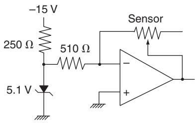
Now \(V_{\text{out}}\) increases linearly from 0 to 10 V as \(x\) goes from 0 to 10 cm.
Quick Interactive Check – Potentiometer Scaling
2.2 Capacitive Displacement Sensors – Basics
Capacitive sensors use changes in capacitance:
For a parallel-plate capacitor:
\[ C = K \varepsilon_0 \frac{A}{d} \]
where:
- \(K\) = dielectric constant
- \(\varepsilon_0 = 8.85\ \text{pF/m}\) (permittivity of free space)
- \(A\) = overlapping plate area
- \(d\) = plate separation
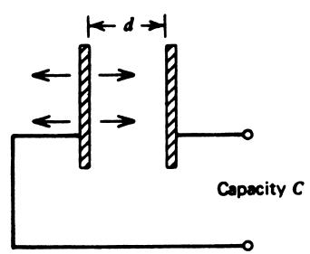 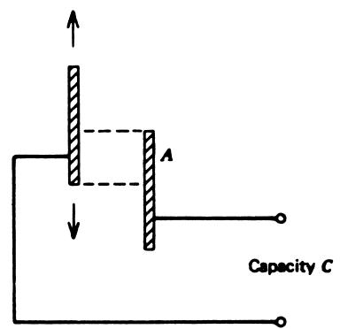
Ways to change \(C\):
- Vary distance \(d\)
- Vary overlap area \(A\)
- Vary dielectric constant \(K\) (e.g., changing level of a liquid)
Typically an AC bridge or oscillator circuit converts small \(\Delta C\) into a voltage or frequency change.
Example 2 – Cylindrical Capacitive Sensor
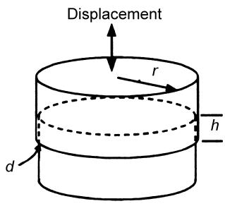
Two metal cylinders form a variable capacitor:
- Plastic sheath thickness: \(d = 1\ \text{mm}\), dielectric constant \(K = 2.5\) at \(1\ \text{kHz}\).
- Cylinder radius: \(r = 2.5\ \text{cm} = 0.025\ \text{m}\).
- Overlap height: \(h\) (variable as inner cylinder slides).
- Find the sensitivity in \(\text{pF/m}\) as \(h\) changes.
- Find \(C_{\min}\) and \(C_{\max}\) if \(h\) varies from \(1.0\) to \(2.0\ \text{cm}\).
Example 2 – Solution
Shared cylindrical area:
\[ A = 2\pi r h \]
Capacitance:
\[ C = K\varepsilon_0 \frac{A}{d} = 2\pi K \varepsilon_0 \frac{r h}{d} \]
Sensitivity to \(h\):
\[ \frac{dC}{dh} = 2\pi K \varepsilon_0 \frac{r}{d} \]
Substitute values:
- \(K = 2.5\)
- \(\varepsilon_0 = 8.85\ \text{pF/m}\)
- \(r = 2.5 \times 10^{-2}\ \text{m}\)
- \(d = 10^{-3}\ \text{m}\)
\[ \frac{dC}{dh} = 2\pi (2.5)(8.85\ \text{pF/m}) \frac{2.5\times 10^{-2}}{10^{-3}} \approx 3475\ \text{pF/m} \]
Since \(C\) is linear in \(h\):
- For \(h_{\min} = 0.01\ \text{m}\): \(C_{\min} = 3475\ \frac{\text{pF}}{\text{m}} \cdot 10^{-2}\ \text{m} \approx 34.75\ \text{pF}\)
- For \(h_{\max} = 0.02\ \text{m}\): \(C_{\max} \approx 69.50\ \text{pF}\)
Interactive Plot – Capacitance vs Overlap Height
Inductive Displacement Sensors (Variable Inductance)
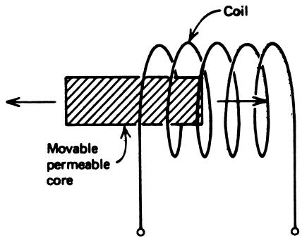
Principle:
- Inserting a permeable core into an inductor changes its inductance \(L\).
- Core position modulates magnetic flux linkage.
Applications:
- Position measurement of mechanical parts in industrial systems
- Often used in AC bridge or oscillator circuits
However, in many real-world industrial systems, a more refined version is used:
- Variable-reluctance devices like the LVDT, which we discuss next.
2.3 Variable-Reluctance Sensors – LVDT
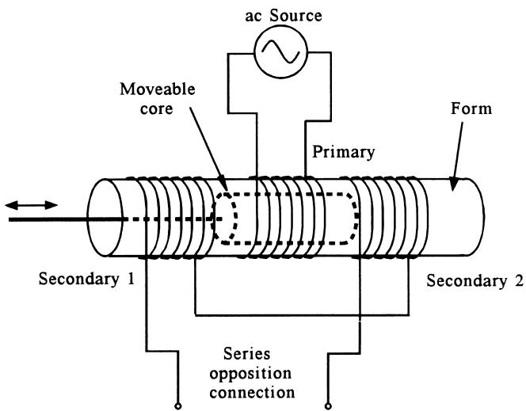
Linear Variable Differential Transformer (LVDT):
- Three coils on a hollow form: one primary in center, two secondaries on either side.
- Permeable core slides freely through the center.
- Primary is excited with AC; each secondary picks up a coupled AC voltage.
Operation:
- Core centered → equal coupling → equal induced voltages in both secondaries.
- Core off-center → one secondary’s voltage > other’s.
- Secondaries are wired in series opposition → differential voltage \(V_{\text{diff}} = V_{s1} - V_{s2}\).
Result:
- At center: \(V_{\text{diff}} \approx 0\).
- Move left/right: \(|V_{\text{diff}}|\) increases nearly linearly with displacement.
- Phase of \(V_{\text{diff}}\) flips as core passes through center (indicates direction).
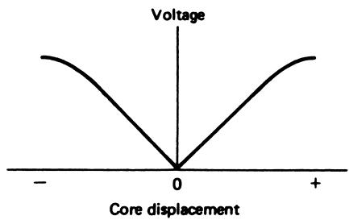
LVDT Signal Conditioning
We want a DC output that’s proportional to displacement and indicates direction (sign).
Two kinds of conditioning:
Simple rectifier scheme (diode-based, less sensitive):
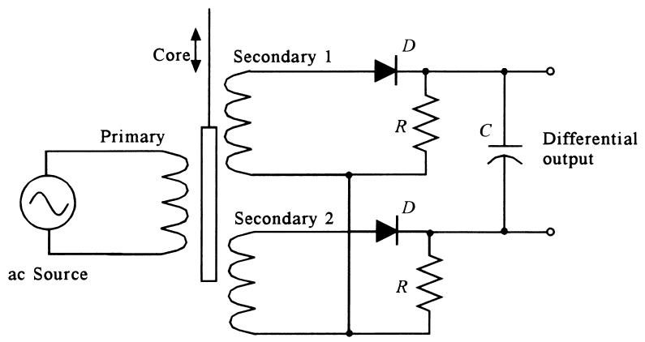
Simple bipolar DC output circuit. Phase-sensitive detection (PSD) with dedicated IC:

LVDT conditioning with built-in excitation and PSD.

General structure:
- Internal AC oscillator excites primary.
- Measure differential secondary voltage.
- Use phase-sensitive detector to demodulate AC into a bipolar DC signal: amplitude ↔︎ displacement, sign ↔︎ direction.
- Filter and amplify to match your ADC range.
LVDT specs typically given as:
- Sensitivity: e.g., 23.8 mV/mm (per some primary voltage).
- Linearity: % deviation over ±range.
- Range: e.g., ±25 cm to ±1 mm models.
Example 3 – LVDT Range and Nonlinearity
Given:
- Max core motion: ±1.5 cm, linearity ±0.3% over this range.
- Transfer function: \(23.8\ \text{mV/mm}\).
- Operating range: \(-1.2\) to \(+1.4\ \text{cm}\).
Tasks:
- Find the nominal output voltages at \(-1.2\ \text{cm}\) and \(+1.4\ \text{cm}\).
- Estimate the uncertainty in displacement due to nonlinearity.
Example 3 – Solution
Convert to mm:
- \(-1.2\ \text{cm} = -12\ \text{mm}\)
- \(+1.4\ \text{cm} = +14\ \text{mm}\)
Use transfer function \(23.8\ \text{mV/mm}\):
\[ V(-1.2\ \text{cm}) = (23.8\ \text{mV/mm})(-12\ \text{mm}) = -285.6\ \text{mV} \]
\[ V(+1.4\ \text{cm}) = (23.8\ \text{mV/mm})(14\ \text{mm}) = 333.2\ \text{mV} \approx 333\ \text{mV} \]
Linearity ±0.3% refers to the transfer function:
\[ \Delta \left(\frac{\text{mV}}{\text{mm}}\right) = \pm 0.003 \cdot 23.8 = \pm 0.0714\ \text{mV/mm} \]
So for an observed voltage \(V_m\), the inferred displacement might use slopes from:
- \(23.73\) to \(23.87\ \text{mV/mm}\)
Example: \(V_m = 333\ \text{mV}\) nominally →
- Nominal: \(333/23.8 = 14.0\ \text{mm} = 1.40\ \text{cm}\)
- Max slope (min displacement): \(333/23.87 \approx 13.95\ \text{mm}\)
- Min slope (max displacement): \(333/23.73 \approx 14.03\ \text{mm}\)
So actual position ≈ \(1.395\)–\(1.403\ \text{cm}\) (±0.3% of reading).
Note
Key takeaway: Nonlinearity shows up as uncertainty in the effective slope of \(V\) vs \(x\), and therefore in the inferred displacement.
2.4 Level Sensors – Overview
Level = height of solid or liquid material in a container.
Typical methods:
- Mechanical (float/linkage)
- Electrical (resistive or capacitive)
- Ultrasonic (time-of-flight of acoustic pulses)
- Pressure-based (hydrostatic pressure at the bottom)
Mechanical float
- Float rides on surface.
- Linkage converts motion to:
- Potentiometer wiper motion
- LVDT core displacement
Capacitive level
- Concentric cylinders in tank.
- Liquid fills part of gap; rest is air.
- Acts like two capacitors in parallel: \(K_{\text{air}} \approx 1\), \(K_{\text{liquid}} \gg 1\).
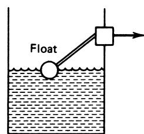 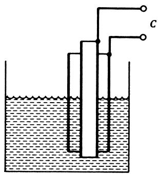
Ultrasonic Level Measurement
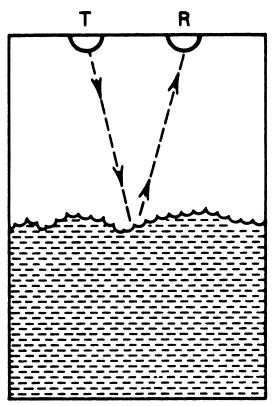 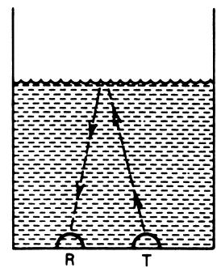
Non-contact method:
- Transmitter sends ultrasonic pulse.
- Pulse reflects from material surface.
- Receiver measures time-of-flight \(t\).
- Distance \(d \approx \dfrac{c_{\text{sound}} t}{2}\) (round-trip).
Advantages:
- No physical contact: good for corrosive, hot, or sanitary requirements.
- Can be mounted above the surface (solids) or below (liquid, through tank wall).
Challenges:
- Depends on speed of sound in medium (air, vapor) → temperature/humidity effects.
- Foam, dust, or surface turbulence can disturb reflection.
Example 4 – Capacitive Level Sensor with Liquid Dielectric
We use a concentric cylindrical capacitor like in Figure 10b, to measure ethyl alcohol level from 0 to 5 m.
Given:
- Dielectric constants: air \(K_{\text{air}} = 1\), alcohol \(K_{\text{alcohol}} = 26\).
- Cylinder separation: \(d = 0.5\ \text{cm} = 0.005\ \text{m}\).
- Effective plate area: \(A = 2\pi R L\).
- Average radius: \(R = 5.75\ \text{cm} = 0.0575\ \text{m}\).
- Full length: \(L = 5\ \text{m}\).
Task: Find the range of capacitance as level goes 0 → 5 m.
Example 4 – Solution
First, compute total cylindrical area for full length:
\[ A = 2\pi R L = 2\pi(0.0575\ \text{m})(5\ \text{m}) \approx 1.806\ \text{m}^2 \]
For air only (no alcohol):
\[ C_{\text{air}} = K_{\text{air}} \varepsilon_0 \frac{A}{d} = 1 \cdot 8.85\ \text{pF/m} \cdot \frac{1.806\ \text{m}^2}{0.005\ \text{m}} \approx 3196\ \text{pF} \]
So \(C_{\text{min}} \approx 3196\ \text{pF} \approx 0.0032\ \mu\text{F}\).
With full alcohol:
\[ C_{\text{max}} = K_{\text{alcohol}} C_{\text{air}} = 26 \cdot 0.0032\ \mu\text{F} \approx 0.0832\ \mu\text{F} \]
Range: \(C\) from 0.0032 to 0.0832 μF as level goes 0–5 m.
3. Strain Sensors – Big Picture
Strain sensing underpins many other transducers:
- Pressure sensors (flexing diaphragms)
- Force/weight sensors (load cells)
- Acceleration sensors (bending beams, MEMS structures)
- Flow meters (bending of bluff bodies, vortex-shedding elements)
Workflow:
- Mechanical load (force, pressure, acceleration) → internal stress in material.
- Stress → strain (deformation) via material properties (Young’s modulus, etc.).
- Strain → small change in resistance via strain gauges → measurable voltage.
Strain is usually tiny: order of \(1\text{–}1000\ \mu\mathrm{m/m}\). Instrumentation must detect very small resistance changes (milliohms).
3.1 Stress and Strain – Definitions
Stress:
- A measure of internal force per unit area in a material.
- Units: \(\mathrm{N/m^2}\) (Pa) or \(\mathrm{lb/in^2}\) (psi).
Strain:
- Fractional change in dimension due to stress.
- Dimensionless (but often written with a unit ratio, e.g., μm/m).
Types of stress/strain:
- Tensile (pulling, elongation)
- Compressional (pushing, shortening)
- Shear (sliding layers across each other)
We’ll define each using simple rod and block examples.
Tensile and Compressional Stress/Strain
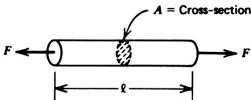 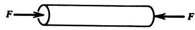
Tensile stress (pulling):
\[ \sigma_{\text{tensile}} = \frac{F}{A} \tag{2} \]
- \(F\): applied tensile force (N)
- \(A\): cross-sectional area (\(\text{m}^2\))
Tensile strain (elongation):
\[ \epsilon_{\text{tensile}} = \frac{\Delta l}{l} \tag{3} \]
- \(\Delta l\): change in length (m)
- \(l\): original length (m)
Compressional stress/strain: same formulas (2) and (3), but with opposite sign of \(\Delta l\) (shortening).
Shear Stress and Strain
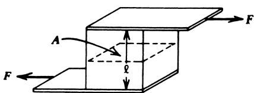 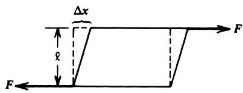
Shear stress: forces act as a couple, tending to slide one face relative to the other.
\[ \tau_{\text{shear}} = \frac{F}{A} \tag{5} \]
- \(F\): force parallel to face (N)
- \(A\): area of sheared face (\(\text{m}^2\))
Shear strain:
\[ \gamma_{\text{shear}} = \frac{\Delta x}{l} \tag{6} \]
- \(\Delta x\): lateral displacement (m)
- \(l\): sample thickness/width (m)
Stress–Strain Curve & Modulus of Elasticity
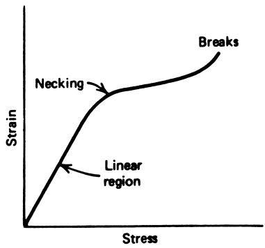
Typical stress–strain behavior:
- Linear region: material behaves elastically.
- Yield/necking: permanent deformation begins.
- Ultimate strength: maximum stress before breaking.
In the linear region:
\[ E = \frac{\text{stress}}{\text{strain}} = \frac{F/A}{\Delta l / l} \tag{7} \]
- \(E\): Young’s modulus or modulus of elasticity (Pa).
Similarly, for shear:
\[ M = \frac{\text{shear stress}}{\text{shear strain}} = \frac{F/A}{\Delta x / l} \tag{8} \]
- \(M\): shear modulus.
Tip
Design rule: For sensors (and structures you care about), always stay within the elastic (linear) region to avoid permanent deformation or calibration drift.
Table: Modulus of Elasticity (Young’s Modulus)
| Material | Modulus (N/m²) |
| Aluminum | 6.89 × 10¹⁰ |
| Copper | 11.73 × 10¹⁰ |
| Steel | 20.70 × 10¹⁰ |
| Polyethylene (plastic) | 3.45 × 10⁸ |
Example – Strain in an Aluminum Beam
Problem:
Find the strain due to a tensile force of \(1000\ \text{N}\) applied to a 10-m aluminum beam with cross-section \(A = 4\times 10^{-4}\ \text{m}^2\).
Given:
- \(E_{\text{Al}} = 6.89\times 10^{10}\ \text{N/m}^2\).
Solution:
Using equation (7):
\[ E = \frac{F/A}{\Delta l / l} \Rightarrow \epsilon = \frac{\Delta l}{l} = \frac{F}{EA} \]
Compute:
\[ \epsilon = \frac{10^3}{(6.89\times 10^{10})(4\times 10^{-4})} \approx 3.63\times 10^{-5} \]
This is \(36.3\ \mu\text{m/m}\) (or \(36.3\ \mu\text{in/in}\) if using English lengths).
Note
Strain is often expressed in micros: \(1\ \mu\text{strain} \equiv 1\ \mu\text{m/m}\).
3.2 Metal Strain Gauge Principles – Resistance vs Strain
Base equation for resistance of a metal sample:
\[ R_0 = \rho \frac{l_0}{A_0} \tag{7} \]
After applying tensile stress:
Length increases: \(l = l_0 + \Delta l\)
Cross-section decreases: \(A = A_0 - \Delta A\)
Volume approximately constant:
\[ V = l_0 A_0 = (l_0 + \Delta l)(A_0 - \Delta A) \tag{9} \]
New resistance:
\[ R = \rho \frac{l_0 + \Delta l}{A_0 - \Delta A} \tag{10} \]
With algebra and small-strain approximation, we get:
\[ R \approx R_0 \left(1 + 2\frac{\Delta l}{l_0}\right) \tag{11} \]
So the change in resistance is:
\[ \Delta R \approx 2 R_0 \frac{\Delta l}{l_0} = 2 R_0 \epsilon \tag{12} \]
This shows metal strain gauges convert strain directly into a small resistance change.
Example 6 – Tiny Resistance Change
Problem:
Find the approximate change in resistance of a metal wire with \(R_0 = 120\ \Omega\) for strain \(\epsilon = 1000\ \mu\text{m/m}\) (\(=10^{-3}\)).
Solution:
Using equation (12):
\[ \Delta R \approx 2 R_0 \epsilon = 2 \cdot 120\ \Omega \cdot 10^{-3} = 0.24\ \Omega \]
This is a 0.2% change in resistance.
Warning
Even for relatively large strain (\(1000\ \mu\epsilon\)), the change is only 0.24 Ω out of 120 Ω.
Measurement circuits must resolve sub-milliohm changes in many applications.
Temperature Effects on Strain Gauges
Metals have a temperature coefficient of resistance (TCR):
\[ R(T) = R(T_0)[1 + \alpha (T - T_0)] \]
Typical \(\alpha \approx 0.004/\!^\circ\mathrm{C}\) for metals.
Temperature-induced resistance change:
\[ \Delta R_T = R_0 \alpha \Delta T \]
Example (same \(R_0 = 120\ \Omega\)):
- \(\Delta T = 1^\circ\mathrm{C}\)
- \(\alpha = 0.004/\!^\circ\mathrm{C}\)
- \(\Delta R_T = 120 \cdot 0.004 \cdot 1 = 0.48\ \Omega\)
Compare:
- Strain-induced change (from Example 6): \(0.24\ \Omega\).
- Temperature-induced change (for 1°C): \(0.48\ \Omega\) → twice as large!
Important
Without temperature compensation, temperature effects can completely mask the strain signal.
3.3 Metal Strain Gauges – Gauge Factor
Gauge factor (GF) quantifies sensitivity:
\[ \text{GF} = \frac{\Delta R / R}{\text{strain}} = \frac{\Delta R / R}{\Delta l / l} \tag{13} \]
For metal gauges, GF is typically near 2.
Interpretation:
- For GF = 2, a strain of \(1000\ \mu\epsilon = 10^{-3}\) produces a fractional resistance change of about \(2\times 10^{-3}\) or 0.2%.
Some special alloys or carbon gauges may have GF up to ~10.
Higher GF → larger resistance change for same strain → easier to measure.
Metal Strain Gauge Construction
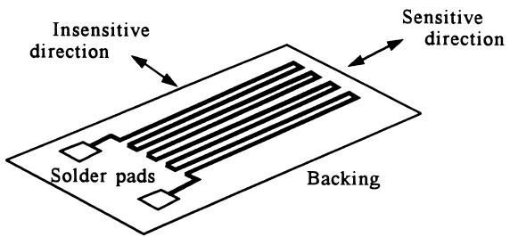
Features:
- Thin wire or foil arranged in a zig-zag pattern on a flexible backing.
- Pattern provides:
- Long effective length → reasonable resistance (60–1000 Ω).
- Unidirectional sensitivity: responds strongly to strain along gauge length.
- Common nominal resistances: 60, 120, 240, 350, 500, 1000 Ω (120 Ω is very common).
Mounting:
- Gauge is bonded (epoxy) to the structure whose strain we want to measure.
- Good bonding ensures gauge strain ≈ structure strain.
If strain is applied transverse to long axis, the pattern tends to “accordion” (unfold) with minimal resistance change → directional selectivity.
Strain Gauge Signal Conditioning – Wheatstone Bridge
Challenges:
- Small fractional resistance changes (need sensitive detection).
- Temperature compensation (cancel out \(\Delta R_T\)).
Solution: Wheatstone bridge with active and dummy gauges.
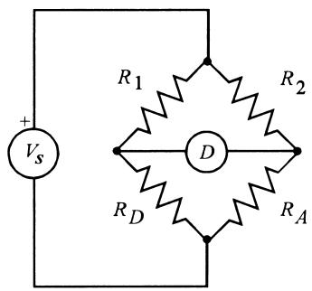 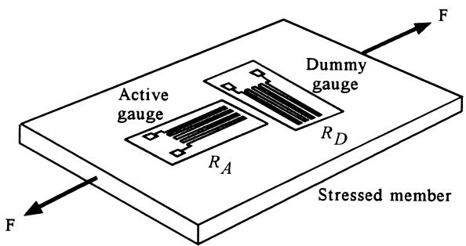
One-arm bridge configuration:
- \(R_1 = R_2 = R_D = R\) (nominal = unstrained gauge resistance).
- \(R_A\) = active gauge resistance = \(R(1 + \Delta R/R)\).
- Dummy gauge \(R_D\) in same temperature environment but mechanically isolated from strain (insensitive orientation).
Bridge output (off-null) voltage:
\[ \Delta V = V_s \left[\frac{R_D}{R_D + R_1} - \frac{R_A}{R_A + R_2} \right] \]
After substitution and approximation \((\Delta R/R \ll 1)\):
\[ \Delta V \approx -\frac{V_s}{4} \frac{\Delta R}{R} \approx -\frac{V_s}{4} \text{GF} \frac{\Delta l}{l} \tag{14} \]
Example 7 – One-Arm Strain Gauge Bridge
Given:
- Active gauge: GF = 2.03, \(R_A\) nominal = 350 Ω.
- Dummy gauge: \(R_D = 350\ \Omega\).
- Other arms: \(R_1 = R_2 = 350\ \Omega\).
- Applied tensile strain: \(1450\ \mu\epsilon = 1.45\times 10^{-3}\).
- Bridge excitation: \(V_s = 10.0\ \text{V}\).
Tasks:
- Find change in gauge resistance \(\Delta R\) and new \(R_A\).
- Compute bridge off-null voltage \(\Delta V\).
- Find relationship \(\Delta V\) vs strain.
- Voltage resulting from 1 μstrain.
Example 7 – Solution
From GF definition:
\[ \text{GF} = \frac{\Delta R / R}{\epsilon} \Rightarrow \Delta R = \text{GF} \cdot \epsilon \cdot R \]
\[ \Delta R = 2.03 \cdot 1.45\times 10^{-3} \cdot 350 \approx 1.03\ \Omega \]
So \(R_A \approx 351\ \Omega\) (tension → resistance increases).
Bridge off-null voltage (exact method):
\[ \Delta V = \frac{R_D V_s}{R_D + R_1} - \frac{R_A V_s}{R_A + R_2} \]
Plug numbers:
\[ \Delta V = 10\left[\frac{350}{700} - \frac{351}{351+350}\right] = 10 \left[0.5 - \frac{351}{701} \right] \approx -0.007\ \text{V} \]
So \(\Delta V \approx -7\ \text{mV}\).
From approximate formula (14):
\[ \Delta V \approx -\frac{V_s}{4} \text{GF} \epsilon = -\frac{10}{4} \cdot 2.03 \epsilon \approx -5.075 \cdot 2.03 \epsilon \approx -10.31 \epsilon \]
So:
\[ \Delta V \approx -10.15 \frac{\Delta l}{l} \quad [\text{V}] \]
For \(1\ \mu\epsilon = 10^{-6}\):
\[ \Delta V \approx -10.15 \times 10^{-6}\ \text{V} = -10.15\ \mu\text{V} \]
So each μstrain yields about 10.15 μV at bridge output.
Note
Instrumentation amplifiers must resolve tens of microvolts in the presence of noise, offset, and drift.
Two-Arm and Four-Arm Strain Gauge Bridges
Two-arm bridge:
- Two active gauges (in two adjacent bridge arms) respond to strain.
- Two dummy gauges for temperature compensation only.
- Sensitivity doubles vs one-arm.
Output (approx):
\[ \Delta V \approx \frac{V_s}{2} \text{GF} \frac{\Delta l}{l} \tag{15} \]
Four-arm bridge:
- All four gauges active (often in bending beam applications).
- Still temperature compensated by symmetric placement.
- Sensitivity increases by another factor of 2 relative to two-arm (approx 4× vs one-arm).
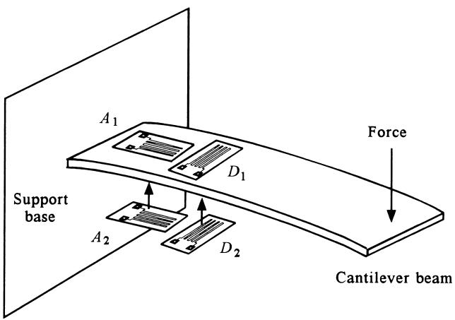
In Figure 17:
- Top surface: one active (\(A_1\)) and one dummy (\(D_1\)).
- Bottom surface: one active (\(A_2\)) and one dummy (\(D_2\)).
- Beam bending causes tension on one side, compression on the other.
Example – Connecting Four Gauges in a Bridge
Task:
Show how the four gauges in Figure 17 (two active, two dummy) can be connected into a bridge such that bridge output increases in magnitude with bending strain.
Idea:
- Place active gauges in bridge arms where their resistance changes produce opposite effects on the two divider voltages.
- E.g., if \(A_1\) increases (tension) and \(A_2\) decreases (compression), they should be placed in opposite bridge legs so both effects make the off-null voltage grow in the same direction.
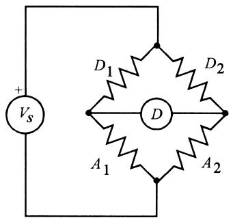
3.4 Semiconductor Strain Gauges
Principle:
- Like metal gauges, but now both geometry and resistivity (\(\rho\)) change under strain.
- Strain alters the band structure of the semiconductor, changing carrier mobility and concentration.
Gauge factor:
Defined the same way:
\[ \text{GF} = \frac{\Delta R / R}{\text{strain}} \]
Semiconductor GF can be very large in magnitude, often negative:
- GF can be as large as about –200 with no strain, then varies (nonlinearly) with strain.
Implications:
- Much larger sensitivity than metal gauges (order ~100×).
- But: GF is nonlinear w.r.t. strain → \(\Delta R\) vs \(\epsilon\) is not linear.
Need:
- Calibration curve or lookup table of GF (or \(R\)) vs strain.
Construction:
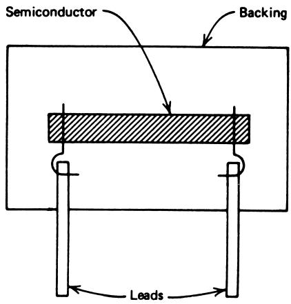
- Silicon chip or strip with metalized contacts.
- Bonded directly or encapsulated on the structure.
- Often integrated into IC pressure sensors, accelerometers, etc.
Signal conditioning:
- Still typically a Wheatstone bridge with temperature compensation.
- Additional linearization needed in electronics or firmware.
Example 9 – Metal vs Semiconductor SG Response
Problem:
Compare resistance changes for a strain of \(150\ \mu\epsilon\) (\(= 0.15\times 10^{-3}\)) in:
A metal gauge with GF = 2.13, \(R_0 = 120\ \Omega\).
A semiconductor gauge with GF = –151, \(R_0 = 120\ \Omega\).
Solution:
General:
\[ \text{GF} = \frac{\Delta R / R}{\epsilon} \Rightarrow \Delta R = R \cdot \text{GF} \cdot \epsilon \]
- Metal gauge:
\[ \Delta R = 120\ \Omega \cdot 2.13 \cdot 0.15\times 10^{-3} \approx 0.038\ \Omega \]
- Semiconductor gauge:
\[ \Delta R = 120\ \Omega \cdot (-151) \cdot 0.15\times 10^{-3} \approx -2.72\ \Omega \]
So the semiconductor SG changes about 70× more in magnitude, and in the opposite direction.
Note
Semiconductor SGs offer high sensitivity but require careful calibration and often more complex circuitry (nonlinearity, temperature sensitivity).
3.5 Load Cells – Force/Weight Measurement
Load cell: a transducer that converts force/weight into a measurable electrical signal, usually via strain gauges.
Typical structure:
- Beam or yoke assembly that elastically deforms under load.
- Several strain gauges bonded to regions of high strain.
- Gauges wired into a Wheatstone bridge for sensitivity and temperature compensation.
Applications:
- Industrial hoppers and silos (measuring stored mass).
- Scales (from kitchen to truck scales).
- Force feedback in robotic grippers.
Forces up to 5 MN (≈ \(10^6\) lb) can be measured with appropriate load cells.
Example 10 – Simple Load Cell on an Aluminum Post
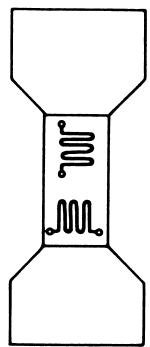
Simple model:
- Aluminum post, radius \(r = 2.500\ \text{cm} = 0.025\ \text{m}\).
- Strain gauges: \(R_0 = 120\ \Omega\), GF = 2.13.
- Bridge per Figure 16: \(V_s = 2\ \text{V}\), \(R_1 = R_2 = R_D = 120\ \Omega\).
- Load range: 0 → 5000 lb.
Tasks:
- Find bridge output \(\Delta V\) for load up to 5000 lb.
Example 10 – Solution
Convert load to SI units:
\[ 5000\ \text{lb} \cdot \frac{1\ \text{N}}{0.2248\ \text{lb}} \approx 22{,}240\ \text{N} \]
Post cross-sectional area:
\[ A = \pi r^2 = \pi (0.025)^2 \approx 1.963\times 10^{-3}\ \text{m}^2 \]
Strain from equation (7):
\[ \epsilon = \frac{F}{EA} = \frac{22{,}240}{(6.89\times 10^{10})(1.963\times 10^{-3})} \approx 1.644\times 10^{-4} \]
i.e., 164.4 μstrain.
Fractional resistance change using GF:
\[ \frac{\Delta R}{R} = \text{GF} \cdot \epsilon = 2.13 \cdot 1.644\times 10^{-4} \approx 3.502\times 10^{-4} \]
So
\[ \Delta R = 120\ \Omega \cdot 3.502\times 10^{-4} \approx 0.0420\ \Omega \]
Beam is under compression, so \(R_A\) decreases:
\[ R_A = 120.0 - 0.0420 = 119.958\ \Omega \]
Bridge off-null voltage:
\[ \Delta V = V_s \left[ \frac{R_D}{R_D + R_1} - \frac{R_A}{R_A + R_2} \right] \]
With \(R_D = R_1 = R_2 = 120\ \Omega\):
\[ \Delta V = 2\left[\frac{120}{240} - \frac{119.958}{119.958+120}\right] \]
Numerically:
\[ \Delta V \approx 2\left[0.5 - \frac{119.958}{239.958}\right] \approx 1.75\times 10^{-4}\ \text{V} = 175\ \mu\text{V} \]
So as force varies 0 → 5000 lb, \(\Delta V\) ranges 0 → 175 μV.
Warning
A real industrial load cell at full scale often produces a few mV/V, not just hundreds of μV total.
This simple post is for illustrating principles; practical designs use optimized geometries and multiple gauges to increase sensitivity.
Summary / Key Points
- Potentiometric sensors convert displacement into a resistance change; using them in feedback of an op amp preserves linearity for a voltage output.
- Capacitive sensors exploit \(C = K\varepsilon_0 A/d\); vary \(d\), \(A\), or \(K\) (e.g., level sensors using liquid dielectric).
- Inductive and variable-reluctance sensors, especially the LVDT, provide highly linear and precise displacement measurement using AC excitation and phase-sensitive detection.
- Level measurement can be done mechanically, capacitively, ultrasonically, or via hydrostatic pressure; each has its pros/cons for different materials and environments.
- Stress is force per area; strain is fractional deformation. Within elastic limits, they are related by Young’s modulus \(E\) or shear modulus \(M\).
- Metal strain gauges convert strain to resistance change with a gauge factor typically near 2.
- Wheatstone bridges with active/dummy gauges enable sensitive detection of small \(\Delta R\) and provide temperature compensation; one-, two-, and four-arm configurations trade complexity for sensitivity.
- Semiconductor strain gauges have much larger (often negative, nonlinear) GF → higher sensitivity but require careful calibration.
- Load cells package strain gauges and structures to measure force/weight; practical designs minimize bending artifacts and are specified in mV/V full-scale.
Formula Summary
Capacitance of parallel-plate capacitor
\[ C = K \varepsilon_0 \frac{A}{d} \]
Stress & Strain
Normal stress (tensile/compressional):
\[ \sigma = \frac{F}{A} \]
Normal strain:
\[ \epsilon = \frac{\Delta l}{l} \]
Shear stress:
\[ \tau = \frac{F}{A} \]
Shear strain:
\[ \gamma = \frac{\Delta x}{l} \]
Modulus of elasticity and shear modulus
Young’s modulus:
\[ E = \frac{\sigma}{\epsilon} = \frac{F/A}{\Delta l/l} \]
Shear modulus:
\[ M = \frac{\tau}{\gamma} = \frac{F/A}{\Delta x/l} \]
Formula Summary (cont.)
Metal Strain Gauge Resistance
Unstressed:
\[ R_0 = \rho \frac{l_0}{A_0} \]
Approximate relation with strain:
\[ \Delta R \approx 2R_0 \frac{\Delta l}{l_0} = 2R_0 \epsilon \]
Gauge Factor (GF)
\[ \text{GF} = \frac{\Delta R / R}{\epsilon} = \frac{\Delta R / R}{\Delta l / l} \]
One-arm bridge output (approx.)
\[ \Delta V \approx -\frac{V_s}{4} \frac{\Delta R}{R} \approx -\frac{V_s}{4} \text{GF} \epsilon \]
Two-arm bridge output (approx.)
\[ \Delta V \approx \frac{V_s}{2} \text{GF} \epsilon \]
LVDT transfer function (example)
Given as sensitivity in mV/mm, approximate linear:
\[ V_{\text{out}} \approx S_{\text{LVDT}}\ [\text{mV/mm}] \cdot x\ [\text{mm}] \]
Optional: Concept Map of Sensor Types